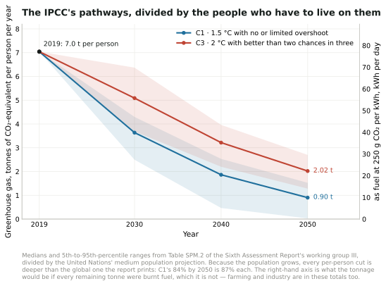
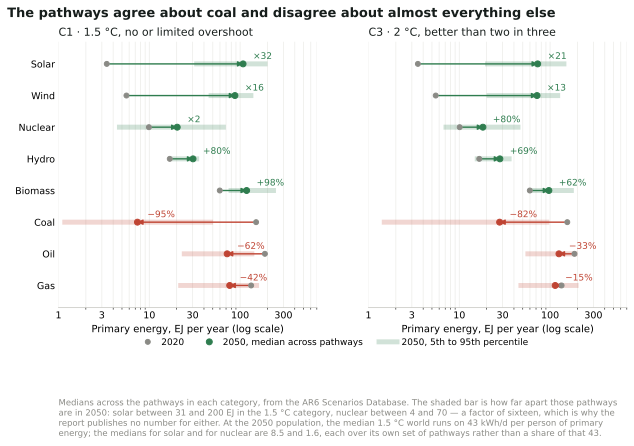
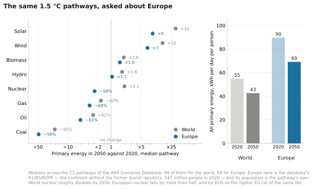
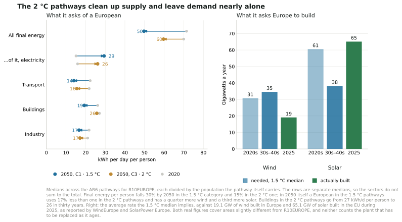

Q The IPCC’s scenarios, in this book’s units
Editor’s note: this chapter is new in the 2026 revision. It is not David MacKay’s writing. Added by Örjan Lundberg.
This book is about one country, and its quantity is energy: kilowatt-hours per day per person, supply against demand. The Intergovernmental Panel on Climate Change’s Sixth Assessment Report is about the whole world, and its quantity is emissions: gigatonnes of carbon dioxide equivalent per year. The two are quoted at each other constantly and almost never in the same units, so this chapter converts the report’s headline pathways into the ones the rest of this book uses.
A word on the abbreviation first, because this edition uses it for two different things. In chapters 4 and 28a, AR6 is Allocation Round 6, the sixth auction of British contracts for difference. Here it is the Sixth Assessment Report, and specifically the 2022 report of its working group III, on mitigation.1
The two categories the report leads with
The report sorts more than a thousand modelled pathways by how much warming they produce. Two categories carry the argument.
C1 limits warming to 1.5 °C with no or limited overshoot: 97 pathways. C3 limits it to 2 °C with better than two chances in three: 311 pathways. Measured against modelled 2019 emissions of 55 GtCO2-equivalent, the median pathway in each category cuts global greenhouse gases by:
| by 2030 | by 2040 | by 2050 | |
|---|---|---|---|
| C1 — 1.5 °C | 43% | 69% | 84% |
| C3 — 2 °C | 21% | 46% | 64% |
Global net zero CO2 arrives in the early 2050s in C1 and around the early 2070s in C3. The cumulative carbon dioxide C1 spends on the way is 510 GtCO2, which at the 2019 rate is about thirteen years of it.
The same pathways, divided by the people living on them

Figure Q.1. This chapter and all its figures are new in the 2026 revision. The report’s two headline categories, computed from the 1202 vetted pathways of the AR6 Scenarios Database and divided by the United Nations’ medium population projection, with the right-hand axis converting the tonnage to the fuel it would be at this book’s own 250 g of CO2 per kWh.2
In 2019 the world emitted 7.0 tonnes per person. C1’s median takes that to 3.6 tonnes by 2030 and 0.90 by 2050; C3’s to 5.1 and 2.0.
Notice what the division does to the headline. The report’s 84% cut by 2050 is a cut in the global total, and the population is projected to grow from 7.8 billion to 9.7 billion over the same period — so the cut each person has to make is 87%, not 84%. At 2030 the gap is wider in proportion: 43% globally, 48% each. Growth in the denominator is doing some of the work the report’s percentages hide, and it is working against us.
What that is, as energy
This book’s carbon chart converts at 250 grams of CO2 per kWh of chemical fuel, oil or petrol. Run the per-person emissions through it and the pathways turn into something a reader of chapter 2 can hold.
Today’s 7.0 tonnes per person is 77 kWh/d of burning — which is close to the 68.9 kWh/d of primary energy per person the world’s richer half actually uses, and not far from MacKay’s British stack of 125. C1’s 2050 figure of 0.90 tonnes is 9.9 kWh/d. C3’s 2.0 tonnes is 22.
Ten kilowatt-hours a day is not a plan for the energy supply; it is the entire greenhouse budget, and farming, cement and everything else has to come out of it first. So the honest reading of the number is the other way round: if the C1 pathway is met while anyone still burns anything, almost all of the energy in chapters 2 to 18 has to arrive without combustion. That is the same conclusion this book reaches from the supply side, arrived at from the emissions side.
What the report says about energy in particular
Five of its findings bear directly on the arithmetic in this book.
Coal, oil and gas all fall, and not equally. In C1 pathways, 2050 use falls by a median 95% for coal, 60% for oil and 45% for gas against 2019; without carbon capture the falls are 100%, 60% and 70%. In C3 they are 85%, 30% and 15%. Gas survives longest in the scenarios and coal not at all.
Electricity carries the transition. In C1 pathways, almost all electricity in 2050 comes from zero- or low-carbon sources, alongside increased electrification of everything else — which is chapter 20’s argument about cars and chapter 21’s about heat, made globally.
The costs came down faster than anyone’s plans assumed. Between 2010 and 2019 the unit cost of solar fell 85%, wind 55% and lithium-ion batteries 85%, while deployment rose more than tenfold for solar and more than a hundredfold for electric vehicles. MacKay’s own cost figures in chapter 28 are from before that fall, which is what chapter 28’s revision is about.
Half of the 2030 job is available cheaply. Options costing 100 dollars a tonne of CO2-equivalent or less could cut global emissions to half their 2019 level by 2030, and the largest contributions below 20 dollars come from solar, wind, efficiency, stopping the conversion of natural ecosystems, and methane from coal, oil, gas and waste.
And demand is not fixed. Demand-side measures — how buildings, transport and cities are used, not only what supplies them — can cut end-use emissions 40 to 70% by 2050 against baseline. This book holds demand roughly constant and asks what can supply it; the report says the demand is itself a variable, and a large one.
The money is the part this book’s chapter 28 is about. Average annual investment for 2020 to 2030 in pathways limiting warming to 2 °C or 1.5 °C is three to six times current levels.
The whole ladder
The two categories above are the ones the report leads with, but it sorts its pathways into eight. Computed the same way — the median pathway in each, in 2050, divided by the people then alive — the ladder reads like this.
| Category | Pathways | Cut by 2050 | Per person | As fuel | Net zero CO2 | Peak warming |
|---|---|---|---|---|---|---|
| C1 · 1.5 °C, no or limited overshoot | 97 | 84% | 0.90 t | 9.9 kWh/d | 2052 | 1.58 °C |
| C2 · 1.5 °C after high overshoot | 133 | 75% | 1.41 t | 15.4 | 2058 | 1.70 |
| C3 · 2 °C (>67%) | 311 | 64% | 2.02 t | 22.1 | 2070 | 1.75 |
| C4 · 2 °C (>50%) | 159 | 49% | 2.91 t | 31.9 | 2079 | 1.91 |
| C5 · 2.5 °C | 212 | 29% | 4.05 t | 44.3 | — | 2.15 |
| C6 · 3 °C | 97 | 5% | 5.42 t | 59.4 | — | 2.69 |
| C7 · 4 °C | 164 | −24% | 7.06 t | 77.3 | — | 3.48 |
| C8 · above 4 °C | 29 | −46% | 8.31 t | 91.0 | — | 4.22 |
Two things are worth reading off it. The step from C3 to C1 — from two degrees to one and a half — costs about 12 kWh/d per person of burning, which is roughly what the average European spends on driving. And the bottom of the ladder is not a plan at all: C8 has emissions per person higher in 2050 than today, and C7 is level with today — 7.06 tonnes against 7.04, a difference far inside the report’s own 53 to 58 GtCO2-equivalent band for 2019. That is what “no new policy” looks like once population growth is taken out.3
Does it say how much solar, or how much nuclear?
Not per scenario, and the omission is deliberate.
What the report does publish for each category is the fossil side, which is above, and three statements about the low-carbon side. In pathways that limit warming to 2 °C or below, 88% (69 to 97%) of primary energy comes from low-carbon sources by 2100, and non-biomass renewables — wind, solar, hydro, geothermal — account for 52% (24 to 77%) of all primary energy. Carbon dioxide from energy supply reaches net zero around 2041 (2033 to 2057) in the 1.5 °C pathways and around 2053 (2040 to 2066) in the 2 °C ones. And nearly all electricity comes from low- or no-carbon fuels.
But the report states plainly that those fuels arrive in “different shares of nuclear, biomass, non-biomass renewables, and fossil CCS across pathways”. There is no C1 number for nuclear, or for solar, because the category is defined by its temperature outcome and not by its machines. Its illustrative pathways make the point by disagreeing with each other on purpose: one leans on renewables, one on carbon dioxide removal, one on low demand, one on a broader shift in development. Each reaches the same temperature by a different stack.
That is the same shape as chapter 27 of this book, which offers five plans that all add up and differ completely — MacKay’s point being that the arithmetic constrains the total and leaves the mix to politics. The report reaches it from the other end and says it in the same tone.
Where the per-technology numbers do exist is underneath: every pathway is published in the AR6 Scenarios Database, with primary energy by carrier for each one. The report does not summarise them, and this edition’s first pass through the chapter said so and stopped there.
Then the database was read, and it does.

Figure Q.2. What the pathways build, carrier by carrier, computed from the AR6 Scenarios Database. Grey is 2020, the coloured dot is the median across the pathways in 2050, and the pale bar is the range they span.4
In the 1.5 °C category the median pathway multiplies solar by 32 and wind by 16 between 2020 and 2050, roughly doubles both nuclear and biomass, grows hydro by about four-fifths, and cuts coal by 95%, oil by 62% and gas by 42%. In the 2 °C category the growth is smaller and slower: solar by 21, wind by 13, nuclear by four-fifths, with coal down 82%, oil 33% and gas 15%.
In the book’s own units, the median across the 1.5 °C pathways for total primary energy in 2050 is about 43 kWh/d per person — a third less than Britain uses today — with a median of 9.3 kWh/d for biomass, 8.5 for solar, 6.9 for wind, 2.4 for hydro and 1.6 for nuclear. That list is the low-carbon side only; fossil fuels are still there in 2050, at a median of 6.0 kWh/d of gas, 5.7 of oil and 0.6 of coal. Even with those added the carriers come to about 41 kWh/d rather than 43, because each figure is its own median over its own set of pathways rather than one pathway’s stack.
So nuclear does grow — and of every carrier that grows, it adds the least new energy: 10 EJ a year by 2050, against hydro’s 14, biomass’s 58, wind’s 82 and solar’s 104. That is not a judgement the report makes; it is what happens when a thousand modelling teams each pick a mix and the middle one is taken.
The spread is the part worth staring at. Across the 1.5 °C pathways, solar in 2050 runs from 31 to 200 exajoules and nuclear from 4 to 70 — a factor of six for one and sixteen for the other. The models agree that coal ends and disagree about nearly everything that replaces it. That is why the report publishes the fossil declines as numbers and describes the low-carbon side in words, and it is the honest answer to the question: yes, there is an increase in solar and in nuclear in the scenarios; no, there is no such thing as the IPCC’s number for either.
The nearest thing to a technology ranking the report does publish is a different quantity: the emissions each option could remove in 2030, and what that costs. Wind and solar are the two largest options in that chart, each around 4 GtCO2-equivalent a year, most of it available below 20 dollars a tonne; nuclear is on the same chart at well under a gigatonne, and at a higher cost. That is a statement about 2030 potential and price, not about what any scenario builds.5
And for Europe? For Britain?
The database is published by region as well as by world, so the same question can be asked of a continent. Europe’s answer is not the world’s.

Figure Q.3. The same 1.5 °C pathways, asked about Europe. Europe here is the database’s own R10EUROPE — the continent without the former Soviet republics, 547 million people in 2020 — and each pathway is divided by the population it carries itself.6
In the median 1.5 °C pathway, Europe uses 90 kWh/d per person of primary energy in 2020 and 69 in 2050. That is a fall of about a quarter, on a continent where the population grows a little, and it is a good deal more than the 43 the world median lands on. Coal falls by 98%, oil by 81% and gas by 68%. Solar is multiplied by nine and wind by seven — large, but nothing like the world’s 32 and 16, because Europe starts from a much higher base.
And then nuclear, which is the one carrier where the two answers point in opposite directions. World nuclear roughly doubles by 2050. European nuclear, in the median of the same pathways, falls by 58%, from 3.1 exajoules to 1.3. On the tighter European Union cut of the same database it falls by 91%, to almost nothing.
Two things are worth saying about that before anyone quotes it. The first is the spread, which for this carrier is not a detail: across the European 1.5 °C pathways, nuclear in 2050 runs from 0.1 exajoules to 13.8 — from closing every reactor to more than four times what the continent has now. The median is not a forecast and is barely a description; it is the middle of a disagreement.
The second is where the number comes from. These models do not usually let cost alone decide how much nuclear a region builds: expansion is bounded by assumptions about build rates and public acceptability that the modelling teams set by hand, and for Europe those assumptions were written while Germany was closing its reactors and almost nothing was being started anywhere on the continent. The whole database closed to submissions in 2021. So Europe’s falling nuclear is at least partly a record of what looked plausible then, and a reader in 2026 — after Britain, France, Sweden and the Netherlands each changed their policy on new build — should treat it as a dated input rather than a finding.
For Britain and for Sweden, the honest answer is that the database has nothing to say. Its country-level file does hold both, with 48 scenarios between them from national and European models, but none of those scenarios were vetted and sorted into a temperature category. There is no C1 pathway for Britain in it, and no C3 one either. The countries that do have them are the large emitters the global models resolve separately — China, the United States, India, Japan, Russia, Brazil — and the European Union as a block. Anyone wanting a British 1.5 °C pathway has to go to the Climate Change Committee’s carbon budgets instead, which is a different kind of document: a national plan rather than one draw from a literature.
What Europe would have to change
Figure Q.3 is the supply side: what gets built. The database holds the other half too — what the pathways ask a European to use — and that half is where the two categories part company.

Figure Q.4. What the 1.5 °C and 2 °C pathways ask of a European, and of Europe. Left is demand, right is the rate of building rather than the stock.7
In the median 1.5 °C pathway a European uses 71 kWh/d of final energy in 2020 and 50 in 2050. Transport falls hardest, from 22 to 14, which is not a story about driving less: it is MacKay’s own appendix-A arithmetic arriving in a global model, where an electric drivetrain does the same journey on a fraction of the energy. Buildings fall from 26 to 19, industry from 22 to 17.
Meanwhile the electricity inside that shrinking total nearly doubles, from 15 kWh/d to 29 — from a fifth of final energy to three-fifths. That single pair of numbers is the whole transition in one line: use a third less, and take most of what is left as electricity.
Now compare the two categories, because this is the part the report’s own summary says only in words. Final energy per European falls 30% by 2050 in the 1.5 °C pathways and 15% in the 2 °C ones: the tighter target asks twice the reduction. Put the two side by side in 2050 itself and a European in the 1.5 °C pathways uses 17% less energy than one in the 2 °C pathways, while having a quarter more wind capacity and a third more solar. Both levers move, and neither dominates — which is itself worth knowing, because the argument is usually conducted as though one of them were the whole answer.
What does stand out is how little the 2 °C pathways ask of demand. Fifteen per cent per person over thirty years is roughly what efficiency delivers on its own, and European buildings in those pathways are the clearest case: 27 kWh/d per person today, 26 in 2050, having done essentially nothing in three decades. That 27 is not the 26 quoted for buildings above, because each category’s 2020 figure is its own median over its own set of pathways. The 2 °C route is very nearly all supply — clean up what generates the energy and leave the using of it alone. The 1.5 °C route cannot be done that way, and that, rather than any single ratio, is the difference between them.
The right-hand panel turns the capacity into a rate, because a stock in 2050 is easy to nod at and a rate is not. To reach the 1.5 °C median, Europe builds about 31 GW of wind a year through the 2020s and 35 a year for the twenty years after that, and about 61 GW of solar a year now falling to 38. Against that, Europe built 19.1 GW of wind in 2025 and the European Union built 65.1 GW of solar.
So the scoreboard is split, and not in the direction most people assume. Solar is already being built faster than the 1.5 °C pathways ask. These pathways were written before the 2023 and 2024 cost falls, and they underestimated it — the report itself says as much in its section on how far solar’s costs have dropped beyond what earlier assessments assumed. Wind is running at about two-thirds of the rate, and the gap widens rather than closes, because the pathway’s wind requirement rises after 2030 while solar’s falls. Neither figure counts replacement: the panels and turbines installed in the 2000s come to the end of their lives inside this period, so gross building has to exceed these numbers to hold the net rate.
And nuclear, for completeness: the same pathways take European nuclear capacity from 96 GW to 43. Europe is currently deciding not to do that. Whether that is Europe correcting the models or the models correcting Europe is not something the database can settle; it is only worth knowing that the two disagree.
Why primary energy falls faster than anyone uses less
There is a trap in the first line of figure Q.3, and it is worth spending a paragraph on because almost every published summary of these pathways falls into it. Europe’s primary energy falls 19% by 2050, and its final energy — what actually reaches a building, a factory or a wheel — falls 27%. Both of those are Europe-wide totals, which is why they are smaller than the 30% the previous section gives: that one is per person, and Europe’s population grows a little in these pathways. Primary energy is the larger number and the smaller fall, and neither of them is mostly a story about Europeans doing less.
Three things are going on, and they do not have equal weight.
Chapter M draws the oil half of this as a picture — figure M.1, where a hundred units of crude in the ground come down to thirty-six by the time a car moves — and the three terms below are the same accounting seen from the other end.
The chimneys and the engines close. A coal or gas station converts perhaps 40% of the fuel it burns into electricity and throws the rest away as heat; a petrol engine turns about a quarter of its fuel into motion. Both losses were counted as primary energy, and neither is counted in what replaces them, because the report’s accounting counts a kilowatt-hour of wind or solar output as a kilowatt-hour of primary energy. So Europe doubles its electricity generation, from 13.1 to 27.3 exajoules, while the primary energy each unit of that electricity costs falls from about 1.6 to about 1.0.8 Replace a coal station with a wind farm delivering exactly the same electricity to exactly the same customers and the primary-energy figure falls by about 60% with nothing whatever changing for anyone. Across the whole system, fossil primary energy falls by about 40 exajoules a year and renewables and biomass rise by about 26, and the service delivered does not fall by the difference — the difference is very largely the losses. This is the largest single term, and a good part of it is an accounting convention rather than a physical saving.
The drivetrains change, and here the saving is real. European transport gives up 11.1 exajoules a year of liquid fuel and takes on 3.5 of electricity — a ratio of 3.2 to one. That is MacKay’s appendix A arriving unannounced in a global model: the electric motor does the same journey on a fraction of the energy, and the difference is heat that a petrol engine was making and nobody wanted. Heat pumps do the same thing to buildings. This is the part of the fall that a reader should take at face value.
And something pulls the other way. Europe’s primary energy in 2020 is 1.26 times its final energy. By 2050 that ratio is 1.39 — the conversion overhead gets worse, not better. The chimney losses leave and something else takes their place: in these pathways, hydrogen made from electricity (0.05 exajoules of it in 2020, 3.34 in 2050) and liquid fuels made from biomass (0.56, then 3.57). Making a fuel out of electricity and then burning it is a way of spending three kilowatt-hours to deliver one, which is why chapter O puts most uses of hydrogen near the bottom of a ladder.
That third term deserves scepticism, and this edition will give it some. The pathways assume Europe builds a hydrogen industry sixty times the size of the one it had — an assumption made before 2022, by models in which hydrogen is a convenient way to decarbonise whatever electrification is hard to model. What has happened since is in chapter O: roughly sixty major clean-hydrogen projects cancelled during 2025 alone, and the failures reaching the top of the ladder rather than the bottom, with ArcelorMittal abandoning green-hydrogen steel in Germany. The scenarios’ hydrogen is a modelling convenience that the market is presently declining to build.
Which cuts an interesting way. If hydrogen underdelivers, the pathways are not simply wrong by 4 or 5 kWh/d per person: either the service goes unmet, or it is met by plugging something in, and plugging something in is the more efficient of the two. A Europe that electrifies directly where these models assumed a hydrogen detour would use less primary energy than figure Q.3 shows, not more. The conversion overhead this section warns about is the models’ pessimism, not their optimism — which is not a sentence one often gets to write about a mitigation scenario.
What to take from it
The report and this book agree about more than they disagree. Both say electrification, both say the resource is adequate and the rate of building is not, both say the cheap options are cheap and unbuilt, both are impatient with plans that do not add up.
They differ in two ways worth keeping in mind while reading either. The report’s pathways lean on carbon capture and on carbon dioxide removal at a scale that does not yet exist, which is the caution chapter 23 makes at length. And the report is a set of scenarios, not a forecast: the pathways say what would have to happen for a temperature outcome, not what will. Read as arithmetic, though, they are exactly the kind this book is built on — a quantity, divided by the people who have to live on it, checked against what the machines can actually do.9
Notes and further reading
The report is the Intergovernmental Panel on Climate Change’s Climate Change 2022: Mitigation of Climate Change, the working group III contribution to the Sixth Assessment Report, Cambridge University Press, 2022. Everything quoted in this chapter is from its Summary for Policymakers, which is free: the scenario categories and the reduction percentages from Table SPM.2 and paragraph C.1; the net zero dates from C.2; the fossil-fuel declines and the electricity finding from C.3.2; the cost falls and deployment multiples from B.4.1; the cost-of-abatement finding from C.12; the demand-side range from C.10; and the investment factor from E.5.1. Modelled 2019 emissions of 55 [53–58] GtCO2-equivalent are the report’s own baseline, and its reductions are measured against that rather than against the observed series in its chapter 2, which differs slightly. “AR6” in chapters 4 and 28a of this edition means Allocation Round 6 of the British contracts-for-difference auctions, which is an unrelated thing that shares an abbreviation.↩︎
Figure Q.1 is this edition’s arithmetic on the report’s own ensemble rather than on its printed table. The pathways come from the AR6 Scenarios Database’s metadata indicators, version 1.1, the vetted set of 1202 scenarios that chapter 3 of the working group III report is built on, cut here to the columns used. Medians and 5th-to-95th-percentile ranges are computed across the pathways in each category, and the data task checks its own medians against the percentages Table SPM.2 prints and fails if any drifts by more than 1.5 points — they agree to within a third of a point: 43.3 against 43 for C1 in 2030, 68.9 against 69, 84.2 against 84, and 20.7, 46.3 and 64.5 against 21, 46 and 64 for C3. The category counts come back as the report prints them too, 97 pathways in C1 and 311 in C3 out of 1202. Population is the United Nations’ medium projection as published by Our World in Data: 7.81 billion in 2019, 8.57 in 2030 and 9.66 in 2050. Three cautions. These are greenhouse gases, not carbon dioxide alone, so the conversion to kWh at 250 g per kWh describes what the tonnage would be if all of it were burnt fuel, which it is not — agriculture, cement and industrial gases are inside these totals, and the fuel share is the part this book’s chapters can address. Dividing a global pathway by global population says nothing about who emits what: the report’s own figures put the top 10% of households at 34 to 45% of consumption-based emissions. And a scenario is not a forecast; the ranges shown are the spread of models, not a probability that the world does any of this.↩︎
The ladder is computed from the same file as figure Q.1: for each category, the median across its pathways of the greenhouse-gas reduction from 2019 to 2050, applied to the report’s modelled 2019 total of 55 GtCO2-equivalent, then divided by the United Nations’ medium projection of 9.66 billion people in 2050 and converted at 250 g of CO2 per kWh. Net zero is the median year of net zero CO2 among the pathways in the category that reach it, and is left blank where fewer than half of them do — from C5 downwards, most never do. Peak warming is the median of the database’s own MAGICC estimate. A caution that applies to the whole table: a median across models is not a pathway. Each row mixes scenarios from many modelling teams with different assumptions, so the median is a description of a literature rather than a route anyone proposed.↩︎
Figure Q.2 is computed from the AR6 Scenarios Database’s world timeseries file, version 1.1, which is 345 MB and is not kept in this edition’s repository: it has to be fetched by hand from the IIASA Scenario Explorer, which wants a free account, and the data task says where to put it. The derived table is small and is kept. Each figure is the median across the pathways of a category for a carrier’s primary energy, with the 5th and 95th percentiles for 2050, joined to the categories by model and scenario name. A pathway is counted for a carrier only if it reports that carrier in all three printed years, so the pathway count beside a row describes every number in the row. Carriers still differ from each other — 94 of C1’s 97 pathways report primary energy at all, and 76 of them split out solar and wind — so the medians are over different sets and do not add up to a stack, which is one more reason to read the spread rather than the middle. The check is the report’s own published fossil declines: this extraction gives 95%, 62% and 42% for coal, oil and gas in C1 against the 95%, 60% and 45% of paragraph C.3.2, and 82%, 33% and 15% for C3 against 85%, 30% and 15%, and the task fails if any of the six drifts by more than eight points. Primary energy is converted to kWh per day per person at the 2050 population used in figure Q.1, and the report’s accounting counts one unit of nuclear or non-biomass renewable output as one unit of primary energy, so these are not the substitution-method numbers used elsewhere in this book.↩︎
The low-carbon and renewable shares of primary energy in 2100, and the dates at which carbon dioxide from energy supply reaches net zero, are from section 3.4.2 of chapter 3 of the working group III report, Mitigation Pathways Compatible with Long-term Goals, which is also where the sentence about different shares of nuclear, biomass, non-biomass renewables and fossil CCS comes from. The illustrative mitigation pathways — IMP-Ren, IMP-Neg, IMP-LD, IMP-GS and IMP-SP — are described in the Summary for Policymakers’ Box SPM.1 and in chapter 3. The per-pathway energy mix is published in the AR6 Scenarios Database, hosted by the International Institute for Applied Systems Analysis, which is the source the report’s own tables draw on. The 2030 potentials for wind, solar and nuclear are read off Figure SPM.7 of the Summary for Policymakers, which is why they are given here as approximate: this edition has not had the figure’s underlying values, and the text beside it says only that the large contributions below 20 dollars a tonne come from solar and wind energy, efficiency, ecosystems and methane. Chapter 3’s table 3.4 does give a low-carbon share of primary energy and an electricity share of final energy for every category in 2030, 2050 and 2100, and they are not quoted here because this edition could not map that table’s columns from the published PDF with enough confidence to print numbers from it.↩︎
Figure Q.3 is computed from two more of the AR6 Scenarios Database’s timeseries files, the R10 regional one and the ISO3 country one, each over a gigabyte and neither kept in this edition’s repository; as with figure Q.2 they are fetched by hand from the IIASA Scenario Explorer and the data task says where to put them. R10EUROPE is the database’s own European aggregate; the second, tighter figure quoted for nuclear is the ISO3 file’s EU aggregate, which is a smaller area and a smaller set of pathways, and it is given precisely because it disagrees in magnitude while agreeing in direction. Per-person figures use each pathway’s own regional population rather than an external projection, which is why Europe’s 2020 figure of 90 kWh/d is the pathways’ view of 2020 rather than a measurement. Several things are checked and the task fails on any of them: that R10EUROPE holds about 547 million people in 2020, which is Europe without the former Soviet republics and so establishes which region was read; that it is about a ninth of world primary energy in 2020, the task accepting 10% to 13% against the 11.3% it currently gives; and that nuclear’s fall by 2050 is 58% for R10EUROPE and 91% for the EU cut, each within eight points, so that the paragraph above cannot quietly stop being true. The count of British and Swedish scenarios in the vetted set is likewise checked to be zero, and the 48 uncategorised ones to be 48. The pathway counts are 69 for Europe against 94 for the world in C1, and 242 against 311 in C3: a pathway has to report the region separately to appear here at all.↩︎
Figure Q.4 comes from the same R10 file as figure Q.3, and the same caution applies: each row is its own median over its own set of pathways, so the three sectors do not add up to the final-energy total and are not meant to. Final energy is what reaches the user, after the losses in generating and refining, which is why its numbers are smaller than the primary-energy ones in figure Q.3. The rates on the right are the median capacity at the end of a period minus the median at its start, divided by the years between, which is a net rate and so understates the building: plant that retires inside the period has to be replaced on top of it. The two figures they are set against are Europe’s own: WindEurope reports 19.1 GW of wind newly connected in Europe in 2025 for a fleet of 304 GW, and SolarPower Europe reports 65.1 GW of solar newly installed in the European Union in 2025 for a fleet of 406 GW. Neither association’s Europe is exactly R10EUROPE — WindEurope’s includes Türkiye, SolarPower Europe’s figure is the Union alone — so the comparison is a matter of scale rather than of a decimal place. The task pins the figures quoted in this section: the 71 and 50 kWh/d and the three sector pairs, the fifth and the three-fifths, the 30% and 15% per-person falls, the 17%, 25% and 36% gaps between the categories in 2050, the nuclear capacity pair, and the four build rates, each with a tolerance, so a later version of the database that moved any of them would fail the refresh rather than leave this page in print. The conversion-chain numbers are pinned the same way — the 1.26 and 1.39 ratios, the 3.2-to-one transport swap, and hydrogen’s 3.34 exajoules — and the check on hydrogen is deliberately one-sided: it requires the pathways to be assuming a hydrogen industry at least thirty times today’s, because the paragraph above is about that assumption being large, and a database revision that quietly shrank it would make the paragraph wrong. Primary energy here is on the report’s direct-equivalent accounting, under which a kilowatt-hour of wind, solar or nuclear output counts as a kilowatt-hour of primary energy; the substitution method used elsewhere in this book would inflate the renewable and nuclear figures by roughly the inverse of a thermal station’s efficiency and so would show a smaller fall.↩︎
The 1.6 and 1.0 are the only figures in this section not read straight from the database, and they rest on two assumptions worth stating. The first is the 40% thermal efficiency in the sentence above, a round number for a mixed coal and gas fleet rather than a measured one. The second is that all of Europe’s nuclear and non-biomass renewable primary energy goes to electricity, which under the report’s direct-equivalent accounting is very nearly true by construction and is exactly true for wind and solar. On those two assumptions the primary energy behind a unit of electricity is about 1.6 units in 2020 and about 1.0 in 2050 — the latter forced, because when almost all generation is counted one for one there is nothing left for the ratio to be. A reader who prefers a different thermal efficiency gets a different 2020 figure: 35% gives about 1.8 and 45% about 1.5. The direction is the same on any of them.↩︎
The report is the Intergovernmental Panel on Climate Change’s Climate Change 2022: Mitigation of Climate Change, the working group III contribution to the Sixth Assessment Report, Cambridge University Press, 2022. Everything quoted in this chapter is from its Summary for Policymakers, which is free: the scenario categories and the reduction percentages from Table SPM.2 and paragraph C.1; the net zero dates from C.2; the fossil-fuel declines and the electricity finding from C.3.2; the cost falls and deployment multiples from B.4.1; the cost-of-abatement finding from C.12; the demand-side range from C.10; and the investment factor from E.5.1. Modelled 2019 emissions of 55 [53–58] GtCO2-equivalent are the report’s own baseline, and its reductions are measured against that rather than against the observed series in its chapter 2, which differs slightly. “AR6” in chapters 4 and 28a of this edition means Allocation Round 6 of the British contracts-for-difference auctions, which is an unrelated thing that shares an abbreviation.↩︎